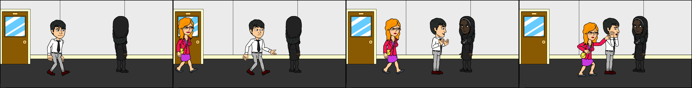

Employee Of The Month
Chapter 2: Death Arrives
Scene 2: The Girl
He arrived at the department and sees the weird girl whose presence is just like a ghost. He approached her and tried to talk
Daniel: Hello, I am Daniel I believe we havent met.
The woman didnt reply and just stares at him. Suddenly someones hand touched Daniels shoulders...
